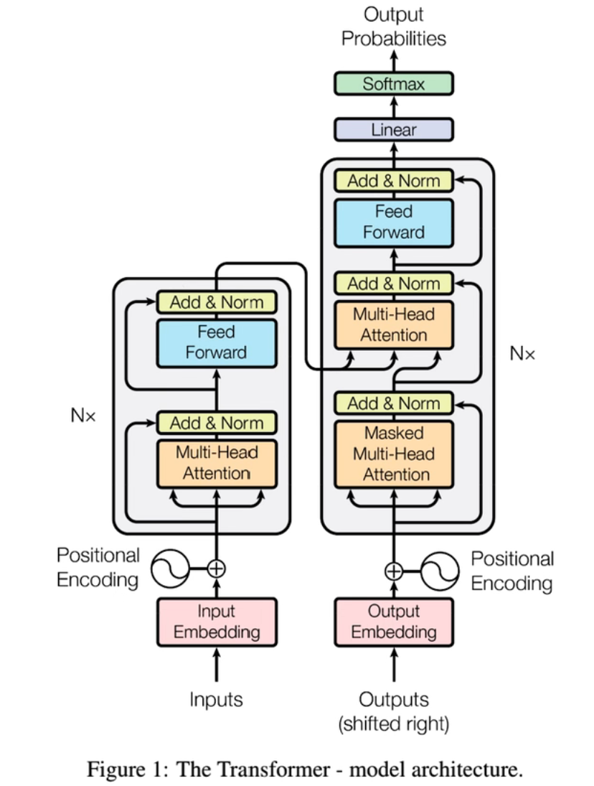
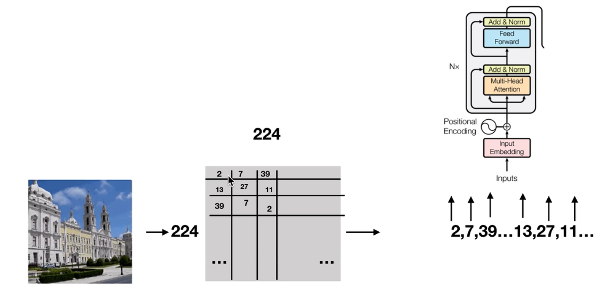
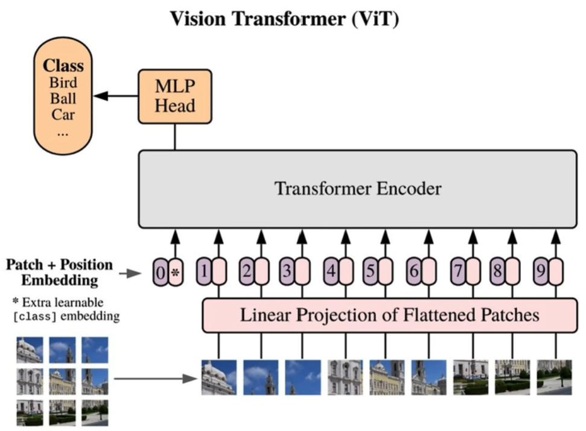

VisionTransformer 论文解读
Transformer结构
Vision Transformer的结构如图所示：

在Vision Transformer中，主要使用的结构为左侧的编码器
将Transformer直接用在视觉领域的问题
想要使用Transformer结构，需要把图片转化为一行Token。而最朴素的想法是直接将图片的像素一行一行读取，转化为一排的Token，如图：

但是这样的做法会导致输入数据复杂度会随着图片的长度和宽度平方级增长
Transformer用在视觉领域的解决方案
1.采用局部注意力机制
2.改进attention公式
3.图像化整为零，切分为patch
每一种方法都可行，也都有相关论文发表。在ViT中，采用的是第三种方案。
ViT模型架构
ViT模型架构图
ViT模型步骤讲解
1.图片划分为patch
模型首先将图片划分为一个一个的patch
2.patch转化为embedding
由于正方形的patch无法直接作为Transformer的输入，模型采用Liner Projection将正方形的patch拉成一条线，并映射到Transformer的输入的维度
3.位置embedding与tokenembedding相加
在这一步中，论文中生成了CLS符号的token embedding，并生成了所有符号的position embedding，最后将token embedding与position embedding相加
4.输入到Transformer Encoder中
5.通过CLS符号做多分类任务
本博客所有文章除特别声明外，均采用 CC BY-NC-SA 4.0 许可协议。转载请注明来自 蓝灵风の博客！